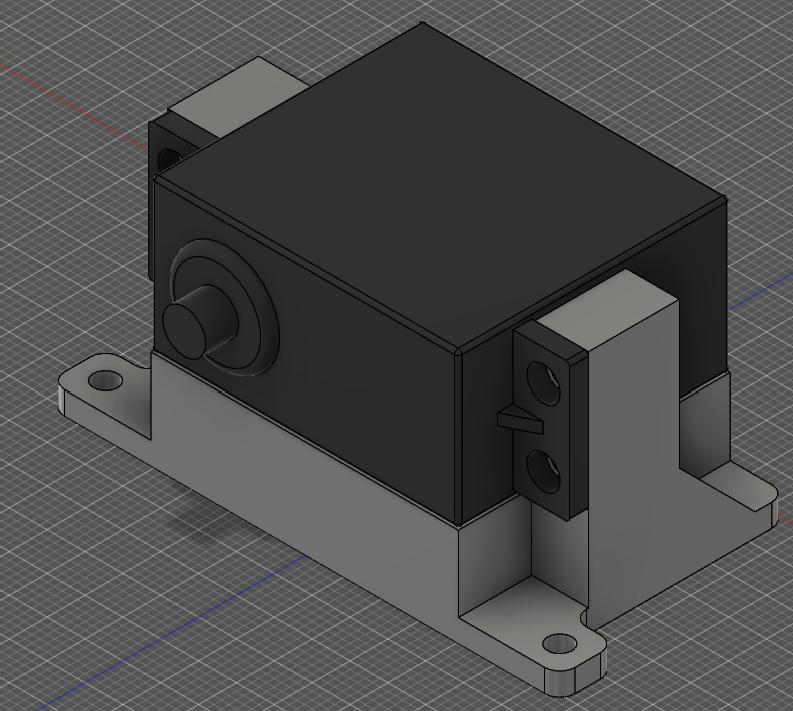
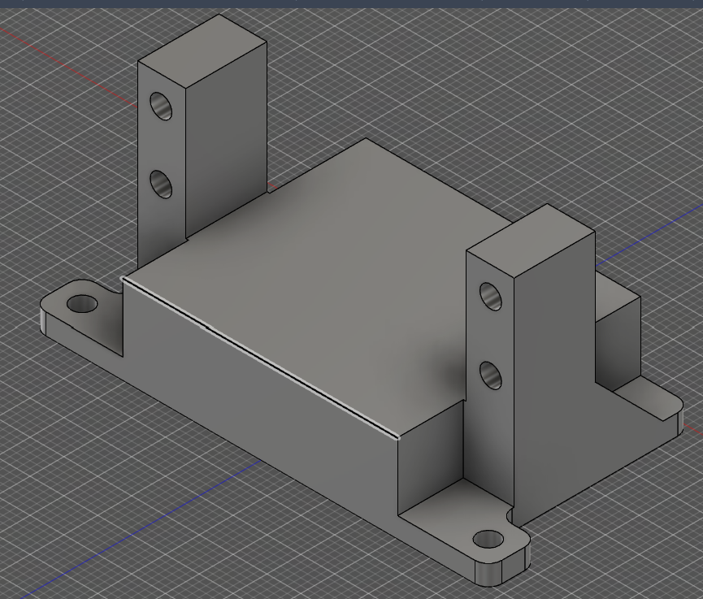

-
01The brief
[Placeholder: what the mount holds, where it sits, and why it was needed.]
-
02Constraints
[Loads, space, weight, material and manufacturing limits.]
-
03Design
[Key design decisions and the analysis behind them.]
-
04Result
[What was built or tested, and how it performed.]


Overview
[What was the problem or goal? What were the constraints and requirements?]
Design & analysis
[Your approach, key design decisions, calculations and simulations.]
Results
[Outcomes, test data, lessons learned, and what you'd do differently.]
- [Key figure, e.g. mass]
- [value]
- [Key figure, e.g. safety factor]
- [value]
- [Key figure, e.g. cost]
- [value]